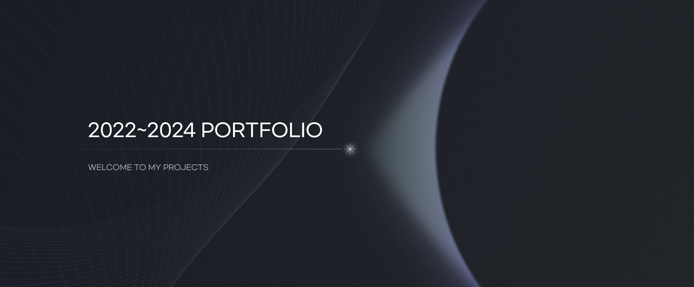
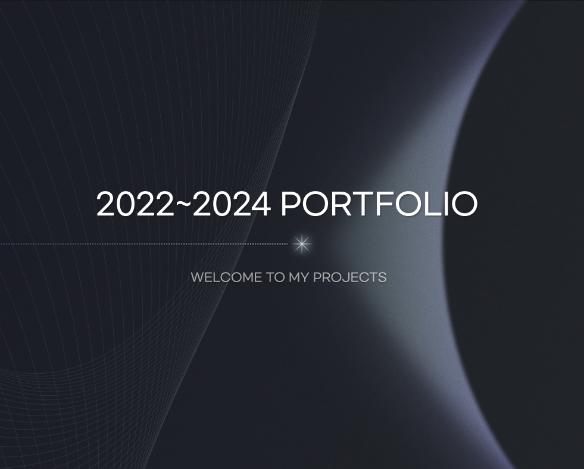

퍼블리셔로서의 역량
단순히 화면을 그리는 것을 넘어, 이후 유지보수와 고도화까지 기준을 고려해 작업합니다.
-
01
마크업 & 구조
시맨틱 HTML과 BEM/SCSS 기반의 재사용 가능한 구조를 설계합니다.
-
02
반응형 & 크로스브라우징
모바일부터 데스크톱까지 안정적인 화면을 구현하고 검토합니다.
-
03
인터랙션 구현
GSAP, Swiper, JavaScript로 자연스러운 UI 동작을 구현합니다.
-
04
협업 & 유지보수
명확한 네이밍과 일관된 규칙으로 수정하기 좋은 코드를 만듭니다.
- HTML5
- CSS3 / SCSS
- JavaScript
- jQuery
- Swiper
- GSAP
- 반응형 웹
- React 학습중
- Tailwind 학습중
Portfolio
6 Projects담당 범위·기간·스택 배치와 명확한 CTA를 갖춘 카드를 세로로 나열했습니다.
-


- 개인 프로젝트
- 제작 4주
- 퍼블리싱 100%
React·Tailwind 환경에서 GSAP ScrollTrigger로 스크롤 인터랙션을 구현한 포트폴리오 사이트입니다. 실무에서 참여한 주요 프로젝트들을 중심으로 구성했습니다.
담당 기획/디자인/퍼블리싱 전체 직접 수행
- React
- Tailwind CSS
- GSAP
- ScrollTrigger
GSAP ScrollTrigger를 활용한 스크롤 인터랙션 구현 Screen Resolution에 따른 반응형 레이아웃 최적화 Component 모듈화로 유지보수성 향상 Animation Timeline 최적화 및 성능개선
GSAP Animation 성능 최적화: 복수의 섹션 Animation 구현 과정에서 발생한 Performance 저하 이슈를 식별했습니다. GSAP 공식문서와 개발자 커뮤니티의 Best Practice를 참조하여 Animation Timeline을 재구성했으며, requestAnimationFrame의 효율적 활용을 통해 최적화를 진행했습니다. 결과적으로 Animation 간 충돌을 해소하고 페이지 렌더링 성능을 약 30% 개선할 수 있었습니다.
-


- 실무 프로젝트
- 제작 3주
- 퍼블리싱 100%
HTML·CSS·jQuery로 제작한 반응형 여행 예약 웹사이트입니다. Desktop·Mobile 환경 모두에 최적화된 UI/UX를 구현했습니다.
담당 반응형 마크업 및 크로스브라우징 전체
- HTML5
- CSS3
- jQuery
- 반응형
- PC와 Mobile 해상도에 맞춘 반응형 레이아웃 구현 - jQuery 기반 메뉴, 탭, 슬라이드 인터랙션 구현
- 반복되는 섹션 구조를 공통 클래스 기준으로 정리해 유지보수성을 개선했습니다. - 화면 너비별 이미지와 여백을 조정해 모바일 사용성을 높였습니다.
-


- 실무 프로젝트
- 제작 1주
- 퍼블리싱 100%
JavaScript의 DOM 조작과 Event Handling을 학습하며 개발한 Desktop 기반 웹사이트입니다. HTML·CSS·JavaScript로 반응형 웹사이트를 제작했습니다.
담당 메인 마크업 및 스크롤 인터랙션 구현
- HTML5
- CSS3
- JavaScript
- 반응형
- Vanilla JavaScript를 활용한 커스텀 슬라이더 구현 - Mouse Hover Event를 통한 인터랙티브한 사용자 경험 제공
슬라이더 직접 구현을 통한 기술적 성장: 기존에 익숙하게 사용하던 Swiper.js 대신 직접 JavaScript로 슬라이더를 구현했습니다. 이 과정에서 슬라이드의 작동 원리와 페이지네이션, 네비게이션 기능의 내부 로직을 깊이 있게 이해할 수 있었습니다. 라이브러리 의존성을 줄이고 직접 구현함으로써 코어 JavaScript에 대한 이해도를 높이는 의미 있는 경험이었습니다
-


- 개인 프로젝트
- 제작 1주
- 퍼블리싱 100%
Swiper.js를 활용하여 제작한 반응형 웹사이트입니다. Mobile 환경에 최적화된 UI/UX를 구현했습니다.
담당 퍼블리싱 및 인터랙션 구현 전체
- HTML5
- Tailwind CSS
- Swiper
- Swiper.js를 사용해 무한 루프, 페이지네이션 기능을 갖춘 커스텀 슬라이더 구현 - Scroll Position 기반의 자동 활성화 내비게이션 구현
- Swiper 기본 기능을 프로젝트에 맞게 확장하며 플러그인 이해도를 높였습니다. - 모바일 환경에서 이미지와 터치 인터랙션 흐름을 정리했습니다.
-


- 개인 프로젝트
- 제작 1.5일
- 퍼블리싱 100%
React를 활용하여 개발한 OTT 플랫폼의 Desktop Web Application입니다. Tailwind CSS를 활용해 클래스 네이밍의 복잡성을 최소화했습니다.
담당 컴포넌트 설계 및 퍼블리싱 전체
- React
- Tailwind CSS
- Tailwind CSS 활용으로 클래스 네이밍 간소화 및 인라인 스타일링 구현 - 스타일 정의의 직관성 향상으로 개발 생산성 증대
React 컴포넌트 기반 구조화: 프로젝트의 초기 환경 구성부터 배포까지 전 과정을 직접 수행했습니다. 컴포넌트 단위의 모듈화를 통해 기존 퍼블리싱 방식 대비 유지보수성을 크게 개선했습니다. 특히 다중 슬라이드 페이지에서 발생하는 버그들을 컴포넌트 분리를 통해 효과적으로 관리했으며, JSON 데이터 구조화를 도입하여 콘텐츠 관리의 효율성을 높였습니다.
-

- 개인 프로젝트
- 제작 2주
- 퍼블리싱 100%
CSS 디자인 토큰을 기반으로 컴포넌트 스타일과 퍼블리싱 규칙을 정리한 가이드 프로젝트입니다. 반복되는 UI 작업에 일관된 기준을 적용할 수 있도록 구성했습니다.
담당 디자인 토큰 설계 및 가이드 문서화 전체
- HTML5
- CSS3
- JavaScript
- Design Token
- tokens.css를 기준으로 색상, 간격, 타이포, radius, shadow 값을 관리하는 구조 정리 - Button, Form, Table, Modal 등 반복 사용되는 UI 컴포넌트를 문서화 - BEM 네이밍, CSS 작성 순서, 접근성 QA 기준을 퍼블리싱 규칙으로 정리
- 화면별로 반복되던 스타일 작성 방식을 디자인 토큰과 컴포넌트 단위로 정리했습니다. - 작업 전 요구사항 정리, 구현 단계, QA 체크리스트를 분리해 작업 효율을 높였습니다.